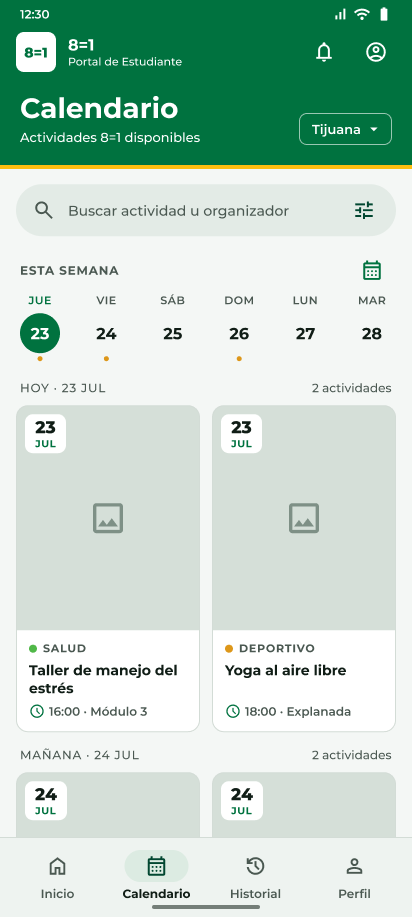
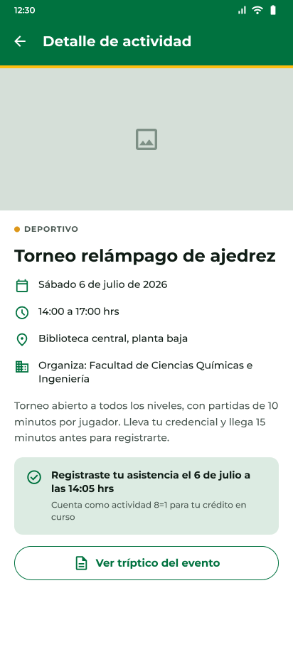
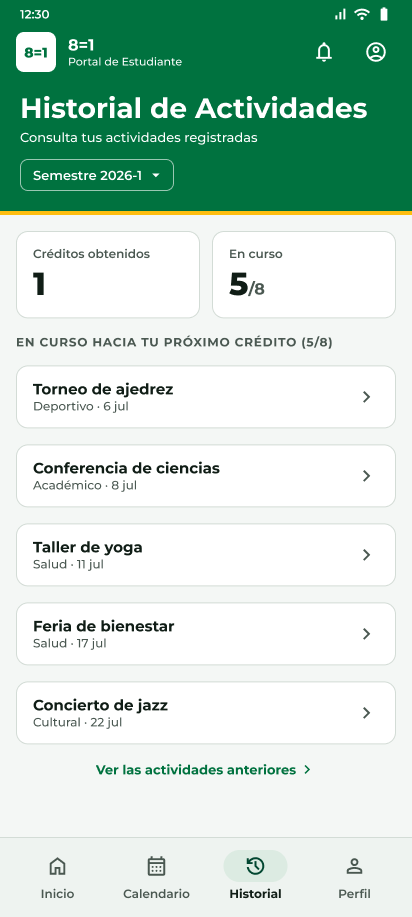

8=1 UABC
A student app for UABC's 8=1 program, where every eight cultural, sports, academic or health activities earn one elective credit. I designed the mobile app in Figma and built it in Flutter.
A student needs three things: find an activity worth going to, prove they were there, and know how close they are to the next credit. Usually while standing at the door of an event.
Design decisions
-
Progress comes first
"How many do I have left?" is the question students open the app with, so the home screen answers it before they tap anything: eight check circles, then the same thing in plain words. Check-in sits right below as one full-width card, because it's the action students take at every event.
-

A way in when the camera fails
Scanning a QR code is the fastest way to check in, but virtual events have no code to scan, and cameras, bad lighting and cracked screens can all fail. The same screen offers a manual code, so a student can always check in.
-

Filters that tell you the result
Filters open in a bottom sheet, so the calendar stays visible behind it. The button says "Show 3 activities" instead of "Apply", so students never land on an empty list by surprise.
-

Less to type, fewer typos
The
@uabc.edu.mxpart of the email is filled in, so students type only their username. Sign-up is two short steps with a progress bar. -

Clear about what the app can't fix
Profile data comes from the university's records, and the app can't change them. So there's no fake "Edit" button. The profile tells students exactly who to email if something is wrong.
Never color alone
Each category always shows its label next to its color, so the meaning doesn't depend on seeing color.
Design that survives code
When I built the screens in Flutter, I put the colors and shared widgets in one theme file, so the app matches the Figma file screen for screen.